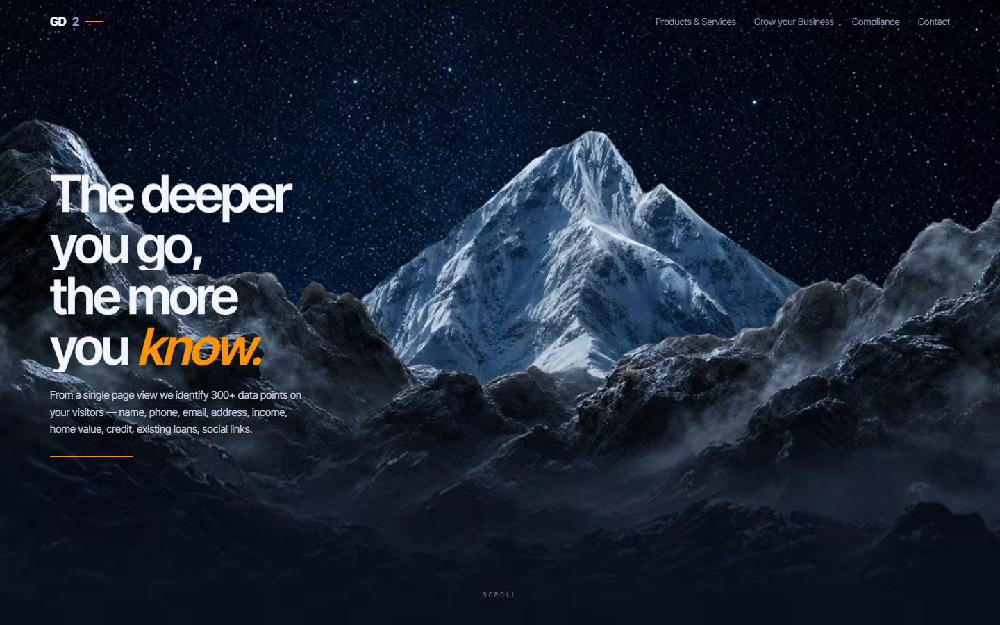
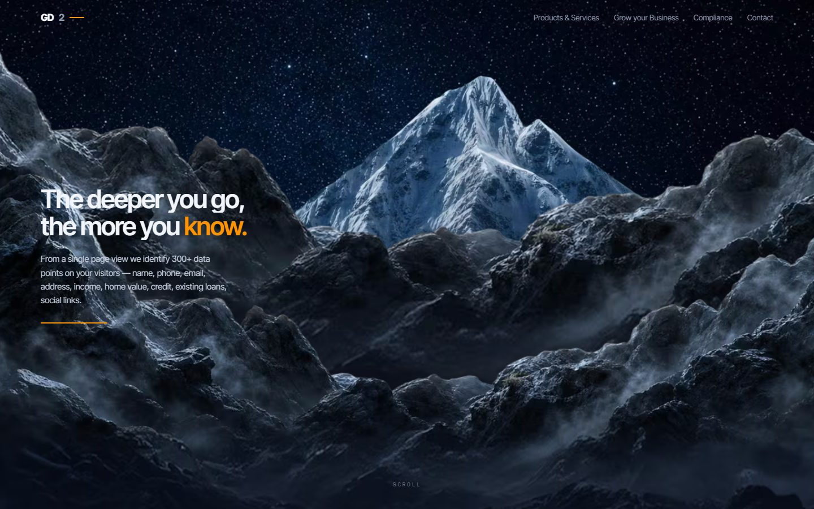
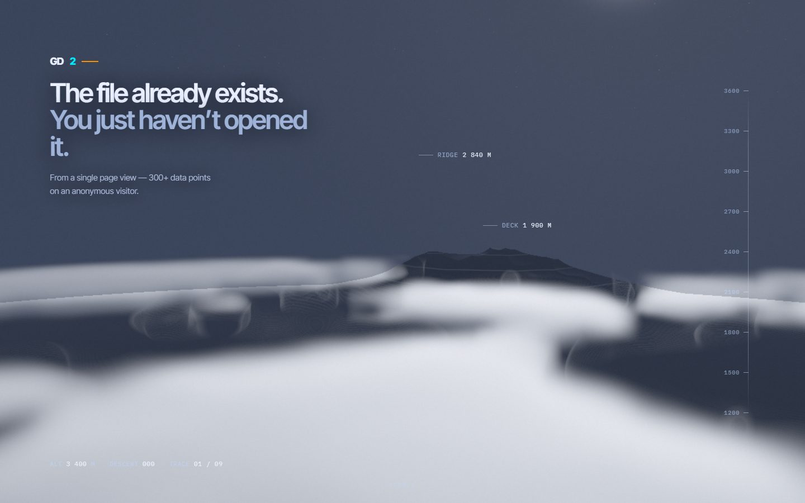

aan test 5
4 versions in this folder.
A restart that rejected travel as the subject and proposed resolution instead. Implementation is stopped; index3 was rejected in full and is kept only as a failed experiment.
Each card opens one version. All six labs.
-

index1
First build of the Aperture architecture: intro, mountain hold, path to summit, callouts, ridge occlusion, then the takeover into water.
Whether resolution rather than travel can carry the scroll story.
opens from disk
-

index2
Second pass, captured in two states — clean, and with the path drawn.
Whether the path belongs on this composition at all. The with-path variant is filed REJECTED.
opens from disk
-
index3
Rejected in full as a visual direction. Kept only as a failed experiment — not to be polished, re-parameterised, renamed, or used as a base.
Grounds recorded verbatim: a white cable over a mountain instead of a path integrated with terrain; oversized dots resembling editing handles; disconnected route fragments; random callout placement; blur concealing weak composition; two scene panels with a visible boundary; a technical implementation more developed than its visual judgement.
opens from disk
-

proto / hero-proof
H1/H2 hero proof on a 700vh spacer. Type lives in the negative space, never on the peak.
Where the headline can sit once the peak owns the centre of the frame.
pulls its faces from Google Fonts, so it wants the network
needs the network
tools/versions.json · 2026-09-07